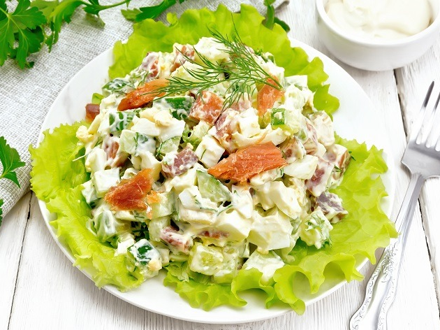
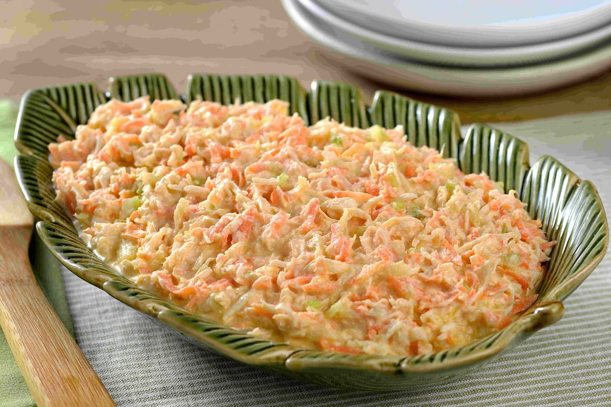

💫 Curiosidades sobre o Salpicão

Salpicão Tradicional
Feito com frango desfiado, cenoura, ervilha, maçã e maionese, é um prato clássico que agrada toda a família.

Salpicão Tropical
Adicionando abacaxi e uvas-passas, essa versão fica doce e refrescante, perfeita para um toque tropical na ceia.

Salpicão Light
Com iogurte no lugar da maionese e mais legumes frescos, é uma opção mais leve sem perder o sabor e a cor.